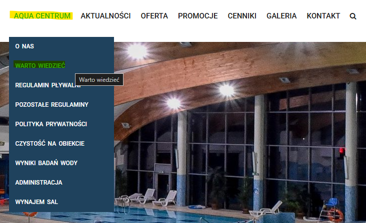

Visiting a new swimming pool, water park, or other recreation center may be stressful. Your customers may be wondering:
How do I get there?
Where are the changing rooms?
How do I use the locker?
Will I have enough time to change?
Although your current website answers some of those questions, it does not provide users with full information. This may cause unnecessary stress for your customers, and additional work for your employees, having to explain the basics.
The content of your website needs to be restructured to highlight practical information, and make it clear and easy to digest.
The first step is improving the 'worth-to-know' page, currently sitting under the general AQUA CENTRUM tab:

The 'worth-to-know' section, 'hidden' under the general tab
For more information, see